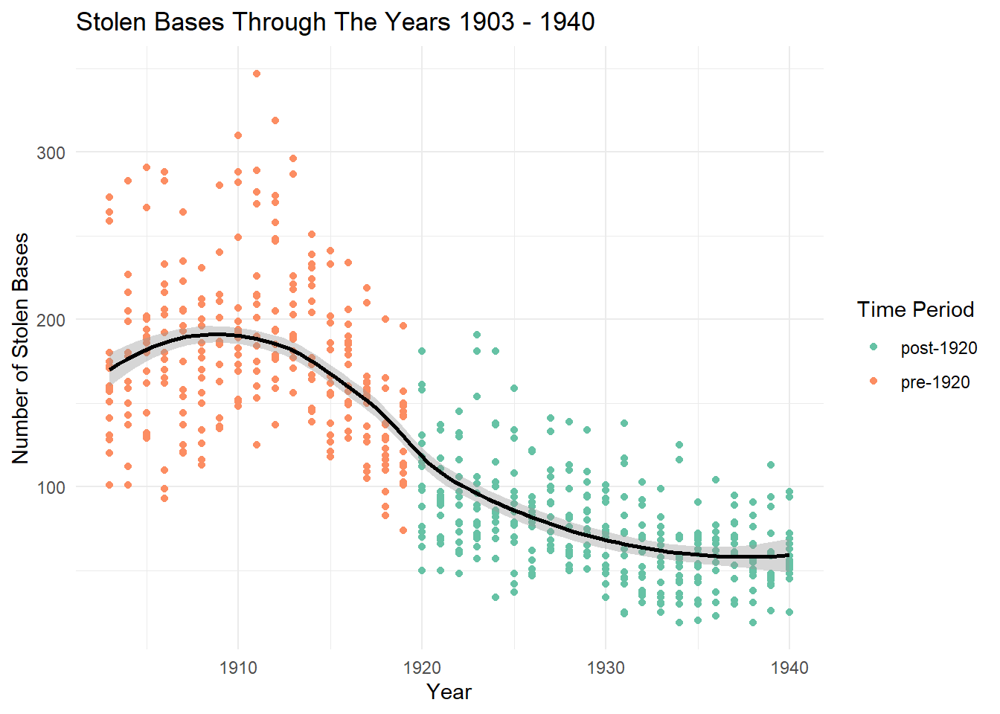
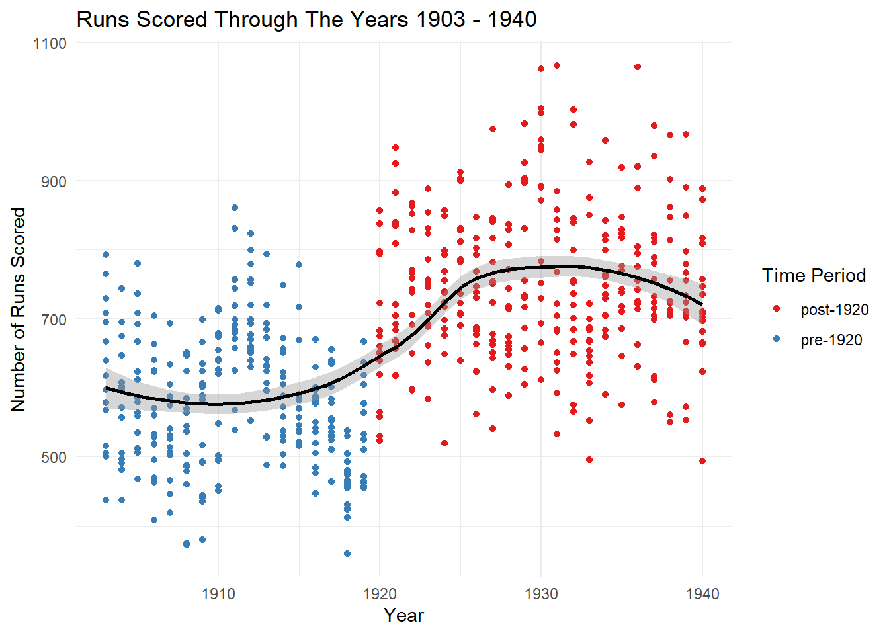
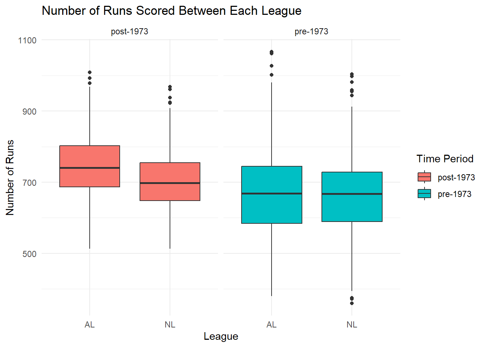
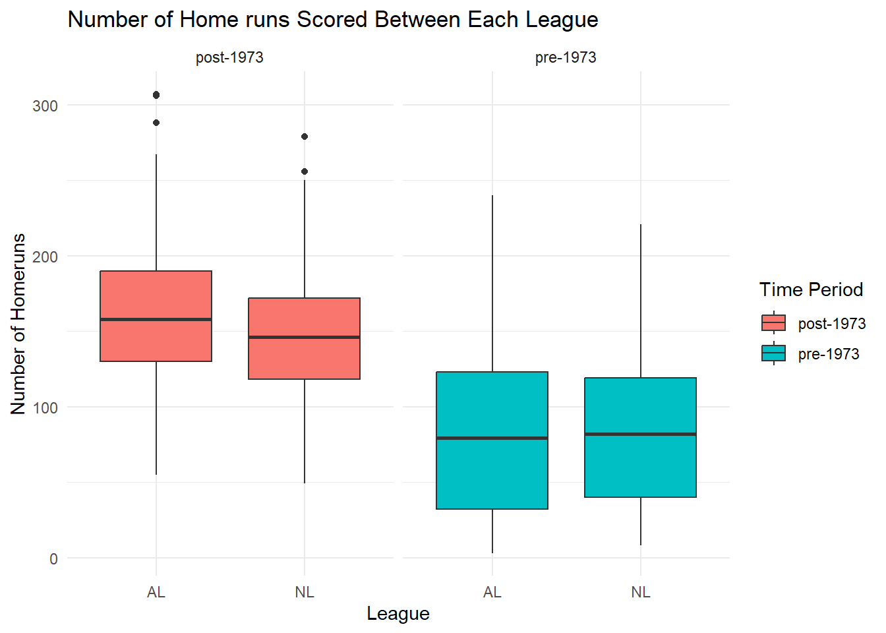
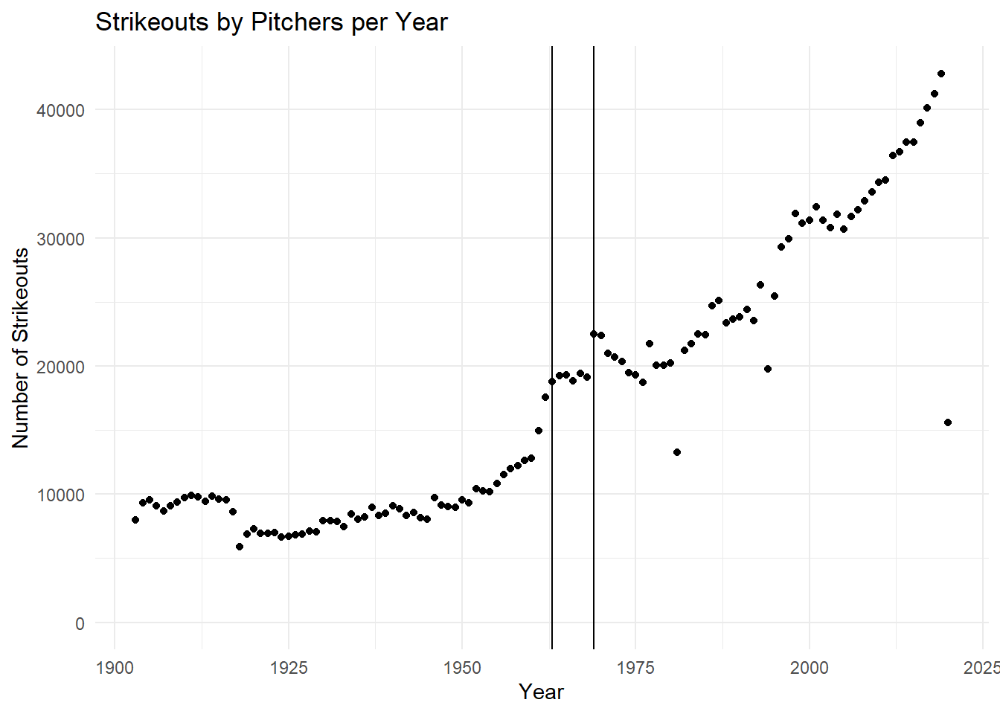

How Rule Changes in Baseball Affected The Game in History
Author
Faith Rhinehart
Published
May 4, 2026
library(readr)library(ggplot2)library(tidyverse)
── Attaching core tidyverse packages ──────────────────────── tidyverse 2.0.0 ──
✔ dplyr 1.1.4 ✔ stringr 1.6.0
✔ forcats 1.0.1 ✔ tibble 3.3.0
✔ lubridate 1.9.4 ✔ tidyr 1.3.1
✔ purrr 1.2.0
── Conflicts ────────────────────────────────────────── tidyverse_conflicts() ──
✖ dplyr::filter() masks stats::filter()
✖ dplyr::lag() masks stats::lag()
ℹ Use the conflicted package (<http://conflicted.r-lib.org/>) to force all conflicts to become errors
library(dplyr)mlb_teams <-read_csv("C:/Users/0211f/OneDrive - St. Lawrence University/SLU In General/DS 334/Data-Science-334/Data_Visualization_Blogs/posts/Final Project/mlb_teams.csv")
Rows: 2784 Columns: 41
── Column specification ────────────────────────────────────────────────────────
Delimiter: ","
chr (8): league_id, division_id, division_winner, wild_card_winner, league_...
dbl (33): year, rank, games_played, home_games, wins, losses, runs_scored, a...
ℹ Use `spec()` to retrieve the full column specification for this data.
ℹ Specify the column types or set `show_col_types = FALSE` to quiet this message.
Created in 1840s New York, modern Baseball took on the first set of formal rules that began to shape and define the sport. These rules included the diamond shaped in-field, 3 outs per innings, and the foul lines. By 1876, baseball grew in popularity and professional teams were introduced, eventually leading to the creation of the National League in 1876 and the American League in 1901 establishing the game as the oldest professional sport in the United States. Since the sport has been played now for 150 years you can imagine there has been a lot of rule changes. Whether it was to improve the game or define the game more, these rules changes made a lasting impact on how players played baseball. The goal of this project is to examine how some of the biggest rule changes that occurred in the history impacted the overall statistics.
The mlb_teams dataset from openintro linked here: https://www.openintro.org/data/index.php?data=mlb_teams looks at every professional team that exists or has existed from 1876 to 2020
To examine rule changes the dataset has been sliced to start at 1903. In 1961 (AL) and 1962 (NL) baseball set a standardized 162 games for the regular season but in 1903 the first World Series Championship began and introduced the “Modern Era” of baseball. Meaning that teams had a postseason (the world series tournament) that influenced the statistics. Not including years before 1903 will control for this. The variables of interests are year, league_id, runs_scored, homeruns, stolen_bases and strikeouts_by_pitchers. It’s important to note that NA values were removed from the dataset and should be considered when interpreting results. The new dataset is named “Baseball”.
Primary Visualizations:
#Rule Change #1: Abolition of Spitball (1920)
The Abolition of Spitball in 1920 was when no foreign substances were allowed on the baseball. Changing the game from small-ball tactics to win to big hitting games since it was easier to hit the ball after the rule change.
stolen_bases <- Baseball |>filter(year <="1940") |>mutate(period =if_else(year <1920, "pre-1920", "post-1920"))ggplot(data = stolen_bases, aes(x = year, y = stolen_bases, colour = period)) +geom_point() +geom_smooth(color ="black") +labs(title ="Stolen Bases Through The Years 1903 - 1940",x ="Year",y ="Number of Stolen Bases",colour ="Time Period") +scale_color_brewer(palette ="Set2") +theme_minimal()
`geom_smooth()` using method = 'loess' and formula = 'y ~ x'

In this graph, number of stolen bases started to decrease in 1910s. This could be for a number of reasons. The trend lines shows that in 1920 the number of stolen bases per year still began to decreased and eventually hit it’s lowest point. The points in green have overall less stolen bases than the points in orange showing the results of the rule change where teams could rely less on stealing bases to advance bases and more on advancing runners by hitting the ball farther.
runs_scored <- Baseball |>filter(year <="1940") |>mutate(period =if_else(year <1920, "pre-1920", "post-1920"))ggplot(data = runs_scored, aes(x = year, y = runs_scored, colour = period)) +geom_point() +geom_smooth(color ="black") +labs(title ="Runs Scored Through The Years 1903 - 1940",x ="Year",y ="Number of Runs Scored",colour ="Time Period") +scale_color_brewer(palette ="Set1") +theme_minimal()
`geom_smooth()` using method = 'loess' and formula = 'y ~ x'

In this graph, number of runs scored started to increase in 1910s. The trend line shows that after 1920 the slope of the line did increase and runs scored overall continued to increases until leveling off. This shows the effects of the rule change where not allowing foregien substances on the baseball helped teams score more runs because it was easier for batters to hit the ball.
##Rule Change #2: The Introduction of a Designated Hitter
One pivotal change that occurred in 1973 was when the American League introduced a designated hitter. Pitchers were generally not very good hitters so to help the offense and make the more games interesting for fans, a designated hitter (DH) bats in place of the pitcher. The National League did not make this change therefore created a huge difference between the leagues. Even though both leagues will still have the same amount of hitters/players the AL had more runs and more home runs than the NL because a better hitter in the AL can hit instead of the pitcher fir the NL. The year 1994, 1981, and 2020 data has been removed since in those years there were significantly less games played because of strikes and the pandemic. They were removed because since all the years are of interest in this plot, they could affect the data.
designated_hitter <- Baseball |>filter(!year %in%c(1981, 1994, 2020)) |>mutate(period =if_else(year <1973, "pre-1973", "post-1973"))ggplot(data = designated_hitter, aes(x = league_id, y = runs_scored, fill = period)) +geom_boxplot() +facet_wrap(~period) +labs(title ="Number of Runs Scored Between Each League",x ="League",y ="Number of Runs",fill ="Time Period") +theme_minimal()

Notice how the AL and NL had similar distributions pre 1973 and after 1973, the AL had a significantly higher number of runs than NL. Between post 1973 and pre 1973 there are more number of runs in post 1973 and this could be because players got better over time.
ggplot(data = designated_hitter, aes(x = league_id, y = homeruns, fill = period)) +geom_boxplot() +facet_wrap(~period) +labs(title ="Number of Home runs Scored Between Each League",x ="League",y ="Number of Homeruns",fill ="Time Period") +theme_minimal()

The difference between leagues are not as pronounced for number of home runs than number of runs scored. But the difference post 1973 is still significantly higher for AL than NL.
##Rule Change #3: The Strike Zone Change
In 1963 the MLB defined the strike zone, this led to “Year of the Pitcher” from 1968 - 1969 where pitchers dominated. This led to the strike zone’s height being reduced and the pitchers mound going from 15” to 10” off the ground in 1969 to help batters more. Many more changes occurred to the strike zone and still causes debate today.
The following object is masked from 'package:ggplot2':
last_plot
The following object is masked from 'package:stats':
filter
The following object is masked from 'package:graphics':
layout
baseballplot <-ggplot(data = pitcherstrikeouts, aes(x = year, y = Total, text =paste("Season:", year,"Strikeouts:", Total))) +geom_point() +theme_minimal() +geom_vline(xintercept =1963) +geom_vline(xintercept =1969) +labs(title ="Strikeouts by Pitchers per Year",x ="Year",y ="Number of Strikeouts") +lims(y =c(0, NA))baseballplot

ggplotly(baseballplot, tooltip ="text")
This plotly graph allows users to look at the total strikeouts by pitchers in the specific year by hovering over the graph. The vertical lines indicate the years the strike zone changed. In general, strikeouts have continued to increase over the years suggesting that pitchers have gotten a lot better over time.
Conclusion and Wrap-Up:
One limitation of this analysis is that there could be many more reasons for the trends seen on these graphs. Baseball has been constantly changing and there could have been many confounding variables affecting the data. This could indicate some flaws in my approach, but I tried to account for it as best as possible. For future analysis I would explore how ABS-a rule change in 2026- affects the statistics. I would also look at how historical events affected statistics like strikes, the world wars and more.
Connection to Class Ideas:
These visualizations connect to class concepts by practicing graphic designs (such as plotly) and data storytelling through research. For each of the graph I had to manipulate that dataset a bit to get the desired graphs for the variables I wanted. Together, these design aspects help clearly and effectively communicate patterns in the dataset and integrates class concepts. This blog post is a mini version of my final project. The full project can be viewed on my GitHub page where the full report and also explores how all the teams preformed throughout history in a Shiny App.